인터스텔라 (영화)
시간과 가족, 선택의 무게를 다루는 방식이 인상 깊었습니다. 어려운 상황에서도 포기하지 않는 태도를 배울 수 있었고, "지금의 선택이 미래를 만든다"는 메시지가 오래 남았습니다.
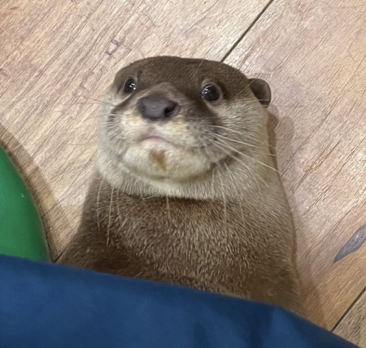
매일 1%씩 성장하며, 배운 것을 기록으로 남기는 주니어 개발자입니다.
안녕하세요. 백엔드와 사용자 경험을 꾸준히 공부하고 있는 서여(박성열)입니다. 작은 기능도 "왜 이렇게 동작해야 하는지"를 먼저 고민하고, 구조를 명확하게 만드는 것을 좋아합니다. 공부 기록은 GitHub와 기술 블로그에 정리하고 있습니다.
| 이름 | 서여(박성열) |
|---|---|
| MBTI | ENTP |
| 취미 | 볼링, 노래방 가기 |
| 좋아하는 음식 | 소싯 |
최근에 먹은 음식들
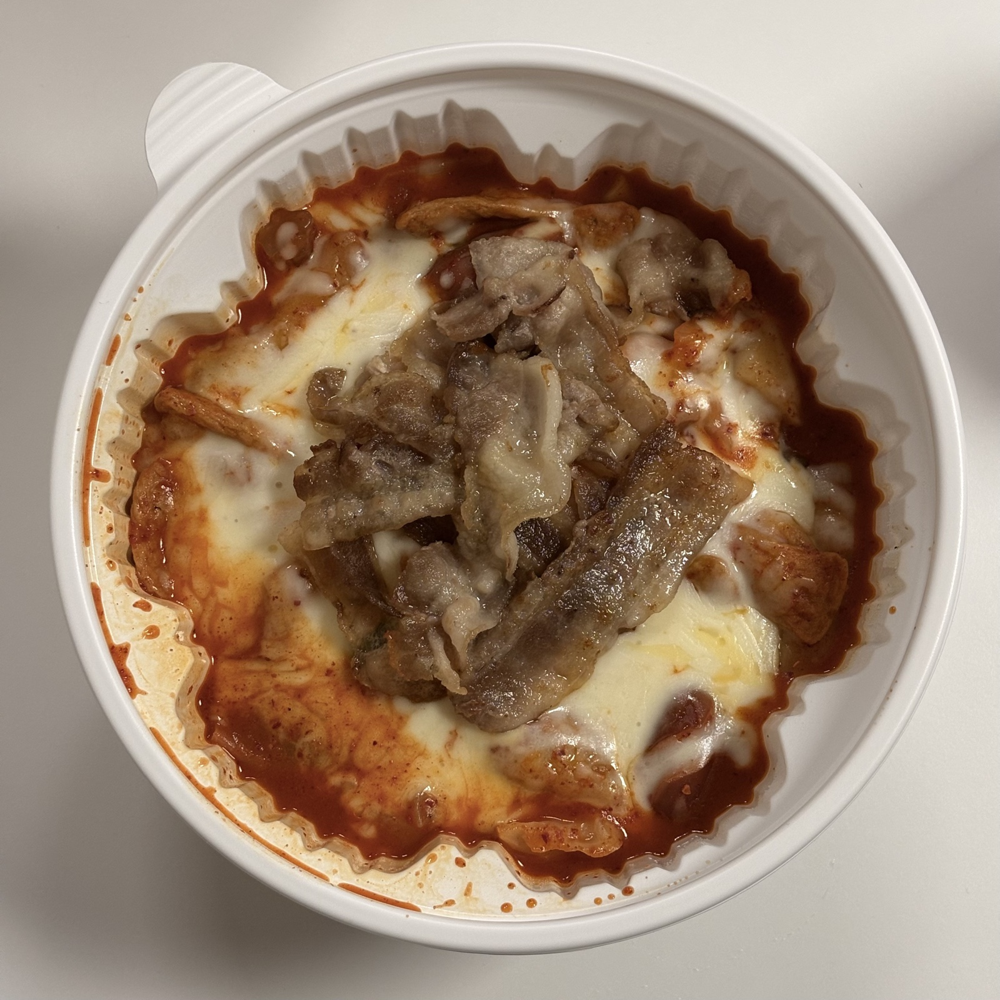
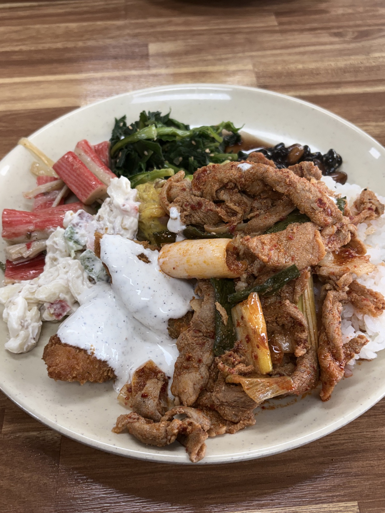
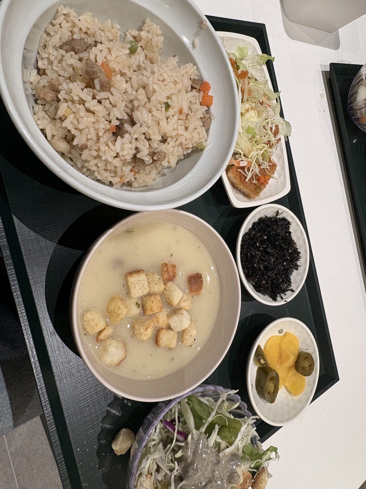
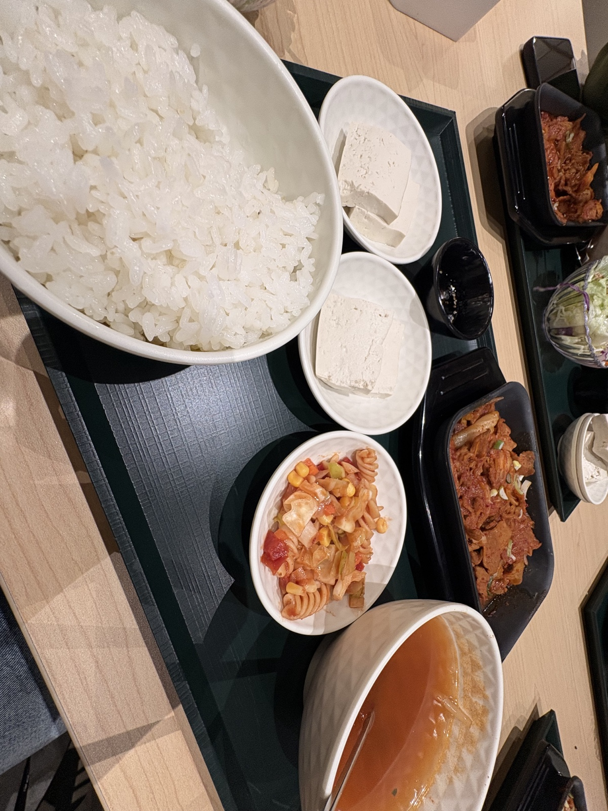
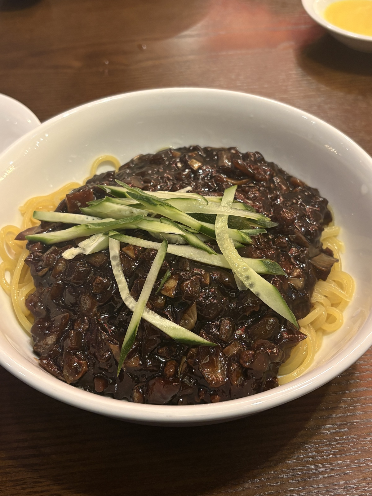
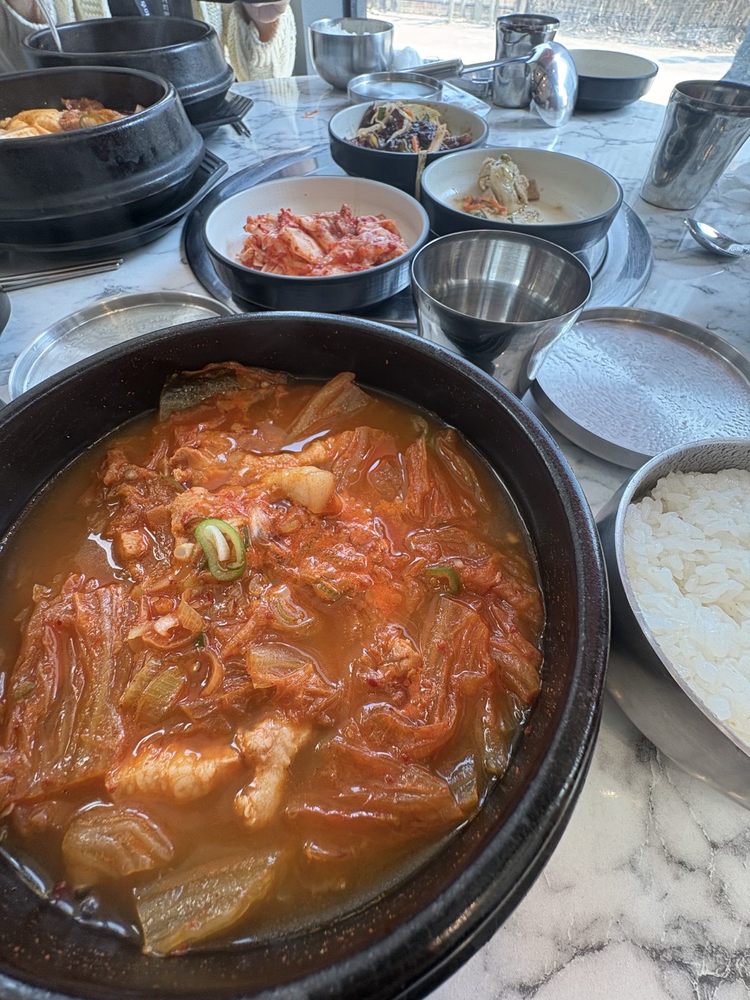
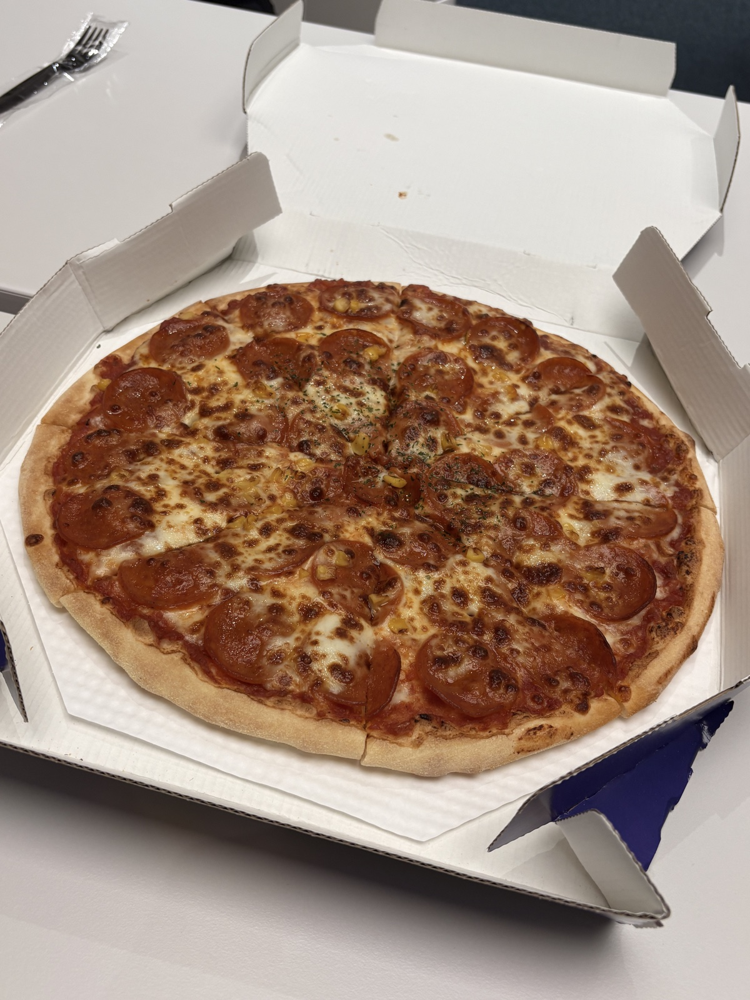
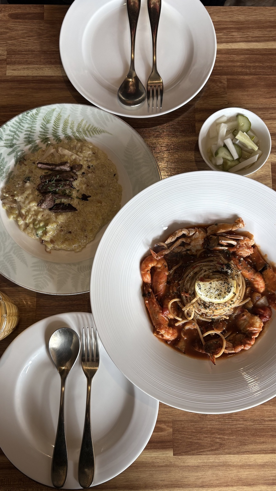
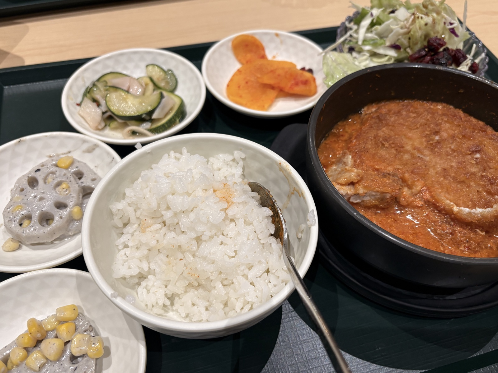
시간과 가족, 선택의 무게를 다루는 방식이 인상 깊었습니다. 어려운 상황에서도 포기하지 않는 태도를 배울 수 있었고, "지금의 선택이 미래를 만든다"는 메시지가 오래 남았습니다.
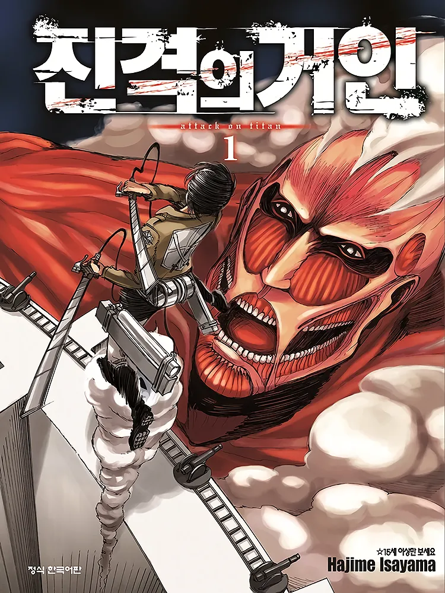
절망적인 상황에서도 끝까지 맞서는 인물들의 선택이 강하게 남은 작품입니다. 자유와 책임, 진실을 마주하는 과정이 깊게 다가와서 여러 번 다시 보게 됐습니다.
오늘 새롭게 배운 것들을 기록합니다.
header, nav, main, section, article, footer를 목적에 맞게 나누면 문서 구조가 더 명확해진다.